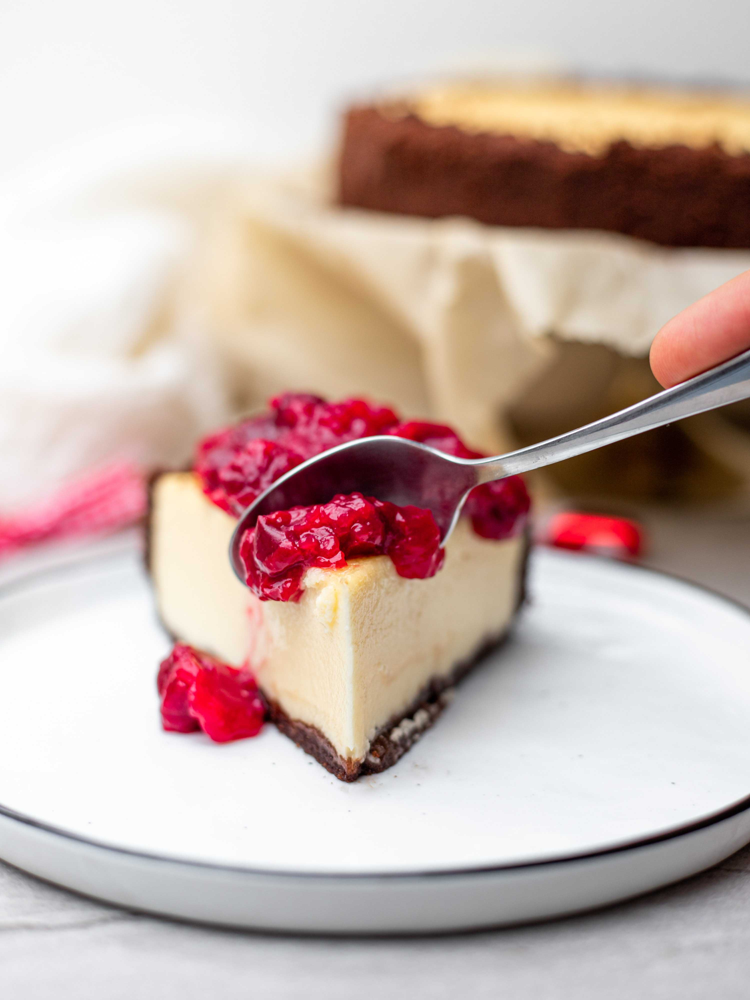

Postres
Cheesecake
Ingredientes: 1 Cheesecake chico
- 25 galletitas de chocolate
- 2 cdas. de manteca
- 100 g. de queso crema
- 3 cdas. de azúcar impalpable
- 1/2 cdita. de esencia de vainilla
- 250g. de crema de leche
Preparación:
- Moler unas 10-12 galletitas de chocolate, con el relleno y todo. Yo lo hice en el complemento batidor del mixer (alias el cuchuflo) pero pueden hacerlo en procesadora o con un mortero. Mezclarlas con la manteca derretida hasta que quede una pasta. Forrar con esta pasta un molde, presionando. Quedará un zócalo de 1cm. más o menos. Llevar a la heladera hasta la hora de usar.
- Batir la crema de leche hasta montar, sin azúcar.
- Batir el queso crema con el azúcar impalpable y la esencia de vainilla hasta unir bien. Verán que el queso queda súper cremoso.
- Unir el queso con la crema y agregar unas 8 galletitas picadas, ya no molidas, esta vez un poco más gruesas, así me gusta a mí esta receta de cheesecake.
- Colocar esta mezcla sobre el zócalo de galletitas y llevar al horno… ehhhh, los asusté, no, es una receta de cheesecake sin horno, va directo a la heladera, por lo menos por 2 horas. Más tiempo, mejor.
- Desmoldar y decorar
Pastelero tip:
Para la decoración se pueden utilizar chocolate o galletitas molidas

Postres
Brownies con helado
Ingredientes:
- 200 gramos de chocolate negro
- 110 gramos de mantequilla
- 4 huevos
- 120 gramos de azúcar
- 1 cucharadita vainilla
- 85 gramos de harina
- 1 taza nueces
- 500 gr helado de crema americana o vainilla
- Bicarbonato
Preparación:
- En un bol ponemos el chocolate y la mantequilla. Lo metemos al microondas a temperatura media para que se vaya derritiendo. Una vez derretido lo lo mezclamos muy bien.
- Ponemos los 4 huevos y el azúcar en un bol.
- Agregamos la harina y la cucharadita de bicarbonato. Mezclamos muy bien.
- Agregamos el chocolate que hemos derretido junto con la mantequilla y el toque de vainilla. Seguimos mezclando.
- Agregamos las nueces y las pepitas de chocolate.
- En un recipiente de horno ponemos un poco de mantequilla y harina para que no se nos pegue el brownie.
- Incorporamos la mezcla y cubrimos con unas pepitas y unas nueces (opcional). Introducimos al horno durante 30-35 minutos a 180º.
- Servimos e incorporamos una bocha de helado de americana
Pastelero tip:
Decromaos con baño de chocoloate sobre el helado